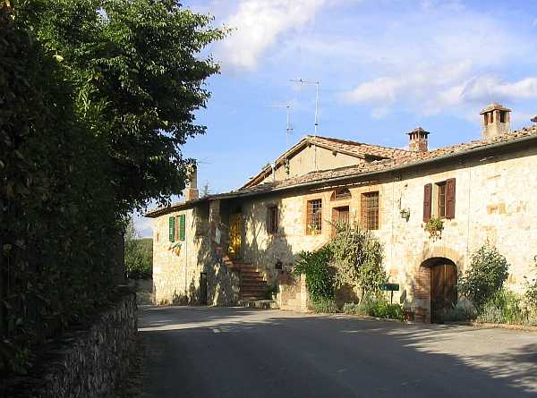

Superato Petroio di duecento metri, percorrendo la strada di Vagliagli, si incontra Pietralta che, a destra della carreggiata, si mostra con la sua lunga facciata di costruzione poderale. Composta da più ambienti suddivisi in due abitazioni e i servizi agricoli, aveva a nord la casa del colono alla quale si accedeva con una scala esterna appoggiata alla costruzione, così come all’attiguo quartiere del fattore era servito da una breve scala diritta, con porta e finestre laterali ingentilite da archetti in cotto.
Podere anticamente legato a Petroio, sia nel civile che nel religioso, passò a fine Ottocento alla fattoria di Mucenni. Rammentato nel 1319 Pietralta o Pietr’alta ha certamente origini più antiche forse al pari di Petroio. Nel Cinquecento appartiene alla famiglia Peri, presenti anche a Petroio, Belvederino e i campi di Piano al Colle. Giovanni Battista, Lattanzio e Antonio Peri si avvicendarono nella proprietà di Pietralta ben oltre la metà del Seicento, poi nel 1685 si registra il possesso della famiglia Nelli di Fonterutoli che si estende anche a Quetole e Casapera formando così un blocco unito della proprietà. Agli inizi dell’Ottocento subentra Galgano Diddi, che risulta dal 1825 fino al 12 ottobre 1850 quando acquista Pietralta Ricci Mario di Giuseppe insieme a tutte le proprietà del Diddi, ossia la fattoria di Larginano con Gaggiola, Viareggio e il Casalino. Vent’anni di padronato per il Ricci poi il 1 ottobre 1879 Pietralta va a Cinotti Lorenzo del fu Raimondo e il 24 luglio 1883 passa a Cinotti Alessandro di Lorenzo erede e Cinotti Anna nei Lazzerini e Penelope di detto Lorenzo legittimarie. Nel gennaio successivo diventa proprietario Lazzerini Otello di Temistocle con Cinotti Anna nei Lazzerini e Penelope fu Lorenzo legittimarie e Nicchi Giulia di Francesco usufruttuaria. Da questa data segue il destino di Quetole.
Nel catasto del 1825 il podere di Pietralta è descritto come casa colonica e aia con una superficie totale di 1848 bq. (628 mq.). Assegnato ad un solo colono per tutta la sua storia Pietralta vede nella seconda metà dell’Ottocento abitarvi anche un pigionale, o guardia, o fattore, ma soprattutto il secondo. Tra le famiglie di coloni che vi hanno dimorato dal Seicento e lavorato il podere di una decina di ettari si conoscono quelle di Michele Tozzi nel 1616 e Giovanni Masini nel 1672 quando si registra anche la presenza di un pigionale certo Domenico Pini e poi un Fiaschi, solitario lavoratore. Da quell’anno bisogna arrivare a fine Ottocento per ritrovare un pigionale a Pietralta che affianca il contadino. Nel Settecento ci abitano gli Anichini, i Masini per mezzo secolo e i Barbucci. Tra le famiglie nell’Ottocento ci sono i Pacciani, i Fosi e i Canocchi, che rimangono tutte per pochi anni fino a quando arrivano i Manganelli nel 1834, che vi resteranno per circa centoventi anni. Auzzi e Lorenzoni sono le ultime famiglie a mezzadria. Tra coloro che hanno dimorato nell’abitazione destinata a pigione si ricordano il fattore Cesare Castagnini, il Panterani e i Bussagli.
Pietralta vista da nord
L'ingresso all'abitazione del fattore
Capitolo successivo Poderino
Inizio pagina
Vai all'Indice dei Capitoli